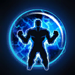
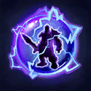

Tassadar
Welcome to our Tassadar guide for Heroes of the Storm. Here you will learn everything you need to know in order to play Tassadar in a competitive environment, whether you play on your own or with a team.
Full Support Build
| Level 1 | Level 4 | Level 7 | Level 10 | Level 13 | Level 16 | Level 20 |
|---|---|---|---|---|---|---|
|  |  |
The Full Support Build turns Tassadar into a high utility Support who is capable of providing powerful shields to nearby allies while weakening enemy initiators by using Phase Disruption Icon Phase Disruption. We recommend this Build if you get the impression that the enemy team features Heroes like Ragnaros or Valeera, who are capable of dealing large amounts of damage in a short period of time.
Offensive Support Build
| Level 1 | Level 4 | Level 7 | Level 10 | Level 13 | Level 16 | Level 20 |
|---|---|---|---|---|---|---|
 |
 |
The Offensive Support Build focuses on boosting Tassadar's offensive capabilities, most importantly his Psionic Storm Icon Psionic Storm and Archon Icon Archon abilities. We recommend this Build if your team already features a solid Support but lacks the damage to take down enemy priority targets.
Templar's Build
| Level 1 | Level 4 | Level 7 | Level 10 | Level 13 | Level 16 | Level 20 |
|---|---|---|---|---|---|---|
|
 |
The Templar's Will Build focuses on enhancing Tassadar's Basic Attacks with the help of talents such as Focused Beam Icon Focused Beam and Prismatic Link Icon Prismatic Link. We recommend this Build if your team already features a solid Support but lacks damage, especially if the enemy team features multiple high health Heroes.
Go Back